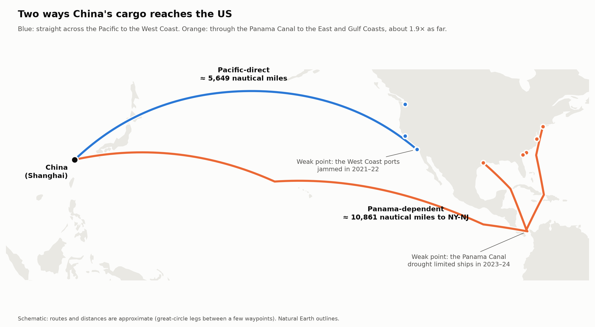
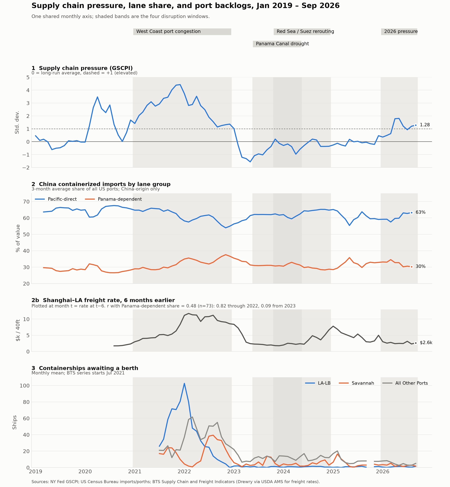
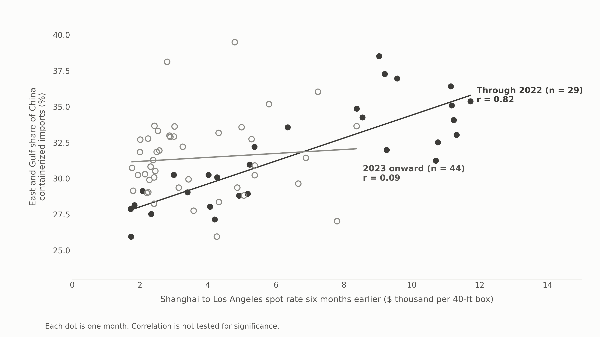
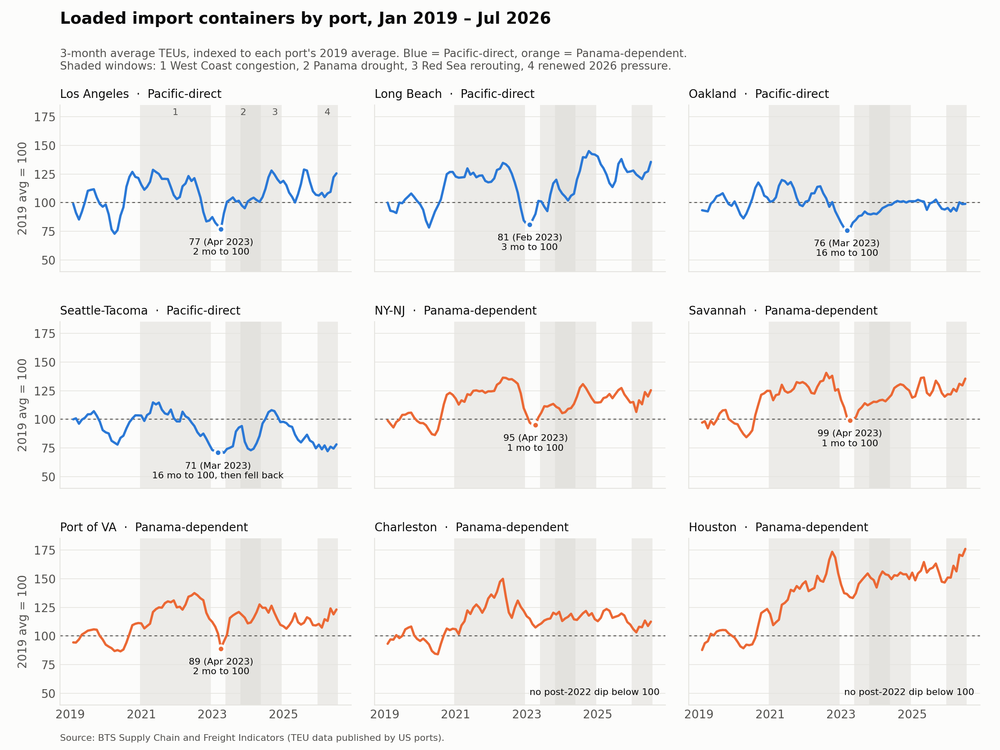

CIS-9655 Data Visualization · Prof. Lisa Santa-Coloma · Fall 2026
Is the supply-chain crisis actually over?
Ships queued outside Los Angeles. Prices spiked.
The NY Fed's pressure score is back above 1 (clearly stressed). Is this 2021 again?
A port jam and a cost shock need different responses. Planners need to know which one they face.
Pressure. How big is it now next to past disruptions?
Lanes. Does cargo switch routes, and which way?
Ports. Which ports were hit, and where do they stand now?
Synthesis. Which disruption causes which pattern, and what is 2026?
0 is an average month. 1 is clearly stressed. One global score per month, 2019 to Sep 2026.
Percent of China's container imports (by value) that land at West Coast ports versus East and Gulf ports. 3-month average.
Containers arriving at a port, compared with that port's own 2019 average (= 100). 3-month average. Below 100 means fewer than in 2019.
Ships waiting for a berth. Counted only for Los Angeles-Long Beach, Savannah, and all other ports together, from Jul 2021.
NotesBTS is the Bureau of Transportation Statistics. A drop in loaded imports is not the same as congestion: the 2023 slump also reflects weaker import demand.

Schematic. The long route is about 1.9 times the short one. China-origin cargo only: $439B in 2024, 13% of US goods imports. Mexico is #1 but moves mostly by truck and rail, so it cannot show a sea-route choice.
West Coast port congestion
Panama Canal drought
Red Sea / Suez rerouting (overlaps episode 2)
Renewed 2026 pressure
Same in every viewBlue is the Pacific route, orange is the Panama route, gray bands are the four episodes.
Four disruptions is a small sample: a pattern, not proof
Two of the four overlap in time
Trade data is China only (about 8% of US imports in 2026)
The crisis is not over, but it is a different crisis. 2021 was a port jam: pressure, freight costs and ships waiting all spiked, and cargo moved east. 2026 is a cost shock: pressure and freight rates are up, ports are clear, and cargo is leaning west.
Our theory (not tested in our data)Outside reporting ties 2026 pressure to the Middle East war, which raised fuel costs and lengthened routes, while tariffs cut China's cargo, so ships are not queuing.
NextRepeat this for a second origin country.
Thank you. Questions?

How to readTop to bottom: pressure, lane share, shipping price (shown six months later), and ships waiting, on one shared time axis. Gray bands are the four disruptions.
Why this chartOne shared time axis lines up every measure month by month. It made co-movement hard to see at a glance, so the main slide uses the scorecard instead.

How to readEach dot is one month. Across: the Shanghai to Los Angeles price six months earlier. Up: the East and Gulf share. Filled dots are through 2022, rings are 2023 onward.
Why this chartA scatter shows whether two measures move together. Splitting by period shows the link held through 2022 (r = 0.82) but not since (r = 0.09).

How to readOne small chart per port, all on the same scale. 100 is the port's 2019 average (3-month average). Blue ports are on the short Pacific route, orange ports on the canal route. The dot marks each port's low after 2022.
Why this chartSmall multiples with one shared scale let you compare nine ports without nine colors on one tangled chart.
The NY Fed's monthly gauge of supply-chain stress. 0 is average, 1 is clearly stressed.
Percent of China containerized import value landing in each route group.
Too much arriving at one port. The problem is at the destination.
A narrow passage like the canal or the Red Sea. The problem is on the route.
Containers moved, with 2019 = 100.